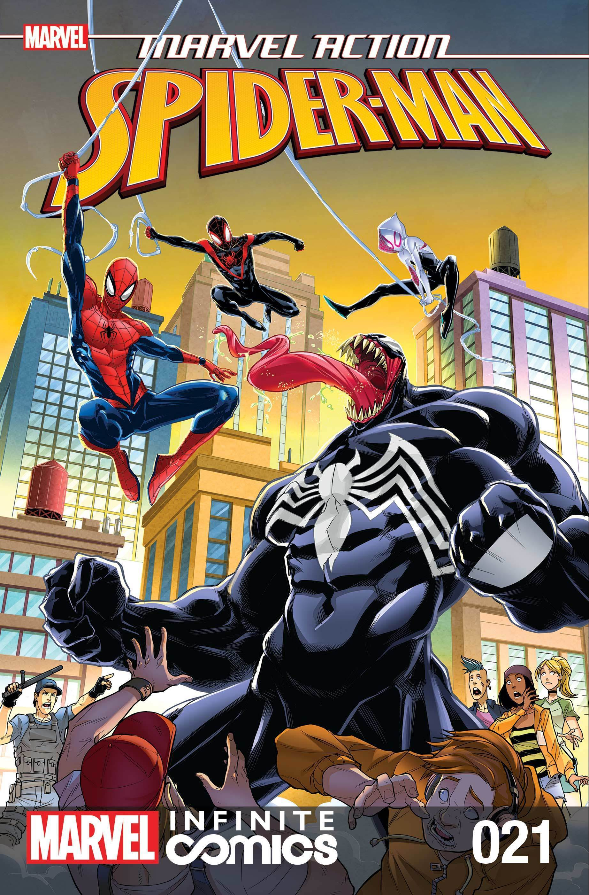
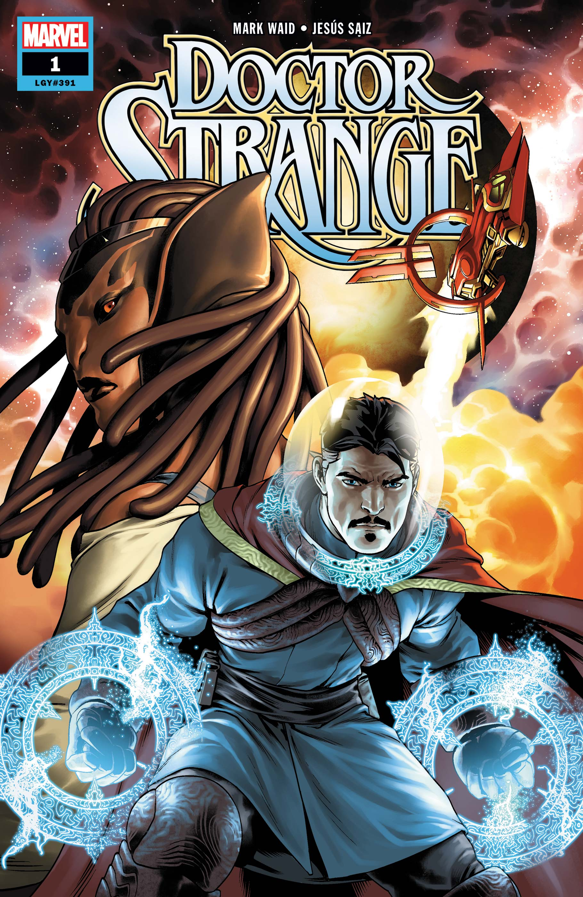

Marvel Comics is the brand name and primary imprint of Marvel Worldwide Inc.,
formerly Marvel Publishing, Inc. and Marvel Comics Group, a publisher of American comic books and related media.
In 2009, The Walt Disney Company acquired Marvel Entertainment, Marvel Worldwide's parent company.
Marvel counts among its characters such well-known superheroes as Spider-Man, Iron Man, Captain America, Thor,
Doctor Strange, Hulk, Wolverine, and Captain Marvel, as well as popular superhero teams such as the Avengers,
the X-Men, the Fantastic Four, and the Guardians of the Galaxy. Its stable of well-known supervillains includes
the likes of Doctor Doom, Magneto, Ultron, Thanos, Green Goblin, Galactus, Loki, and Kingpin. Most of Marvel's fictional
characters operate in a single reality known as the Marvel Universe, with most locations mirroring real-life places;
many major characters are based in New York City. Additionally, Marvel has published several licensed properties
from other companies.
This includes Star Wars comics twice from 1977 to 1986 and again since 2015.
Marvel Commic History
Pulp-magazine publisher Martin Goodman created the company
later known as Marvel Comics under the name Timely Publications in 1939.Goodman, who
had started with a Western pulp in 1933, was expanding into the emerging—and by then already highly
popular—new medium of comic books. Launching his new line from his existing company's offices at 330 West 42nd Street,
New York City, he officially held the titles of editor, managing editor, and business manager,
with Abraham Goodman (Martin's brother) officially listed as publisher.
Goodman hired his wife's 16-year-old cousin, Stanley Lieber, as a general office assistant in 1939.
When editor Simon left the company in late 1941, Goodman made Lieber—by then writing pseudonymously as
"Stan Lee"—interim editor of the comics line, a position Lee kept for decades except for three years during his
military service in World War II. Lee wrote extensively for Timely, contributing to a number of different titles.
Goodman's business strategy involved having his various magazines and comic books published by a number of
corporations all operating out of the same office and with the same staff. One of these shell companies through
which Timely Comics was published was named Marvel Comics by at least Marvel Mystery Comics #55 (May 1944). As well,
some comics' covers, such as All Surprise Comics #12 (Winter 1946 – 47),
were labeled "A Marvel Magazine" many years before Goodman would formally adopt the name in 1961.
Marvel Entertainment Group
In 1986, Marvel's parent, Marvel Entertainment Group, was sold to New World Entertainment,
which within three years sold it to MacAndrews and Forbes, owned by Revlon executive Ronald
Perelman in 1989. In 1991 Perelman took MEG public. Following the rapid rise of this stock,
Perelman issued a series of junk bonds that he used to acquire other entertainment companies, secured by MEG stock.
In late 1994, Marvel acquired the comic book distributor Heroes World Distribution to use as its own
exclusive distributor. As the industry's other major publishers made exclusive distribution deals with other c
ompanies, the ripple effect resulted in the survival of only one other major distributor in North America, Diamond Comic
Distributors Inc. Then, by the middle of the decade, the industry had slumped, and in December 1996 MEG filed for
Chapter 11 bankruptcy protection. In early 1997, when Marvel's Heroes World endeavor failed, Diamond also
forged an exclusive deal with Marvel giving the company its own section of its comics catalog Previews.
To help Marvel expand its storytelling during the early to mid-1990s, they began to experiment
with their series, including Saturday-morning cartoons and various comic collaborations to explore new genres.
In 1992, they released the X-Men: The Animated Series which was aired on Fox Kids, they later released a Spider-Man:
The Animated Series on the network as well. In 1993, Marvel teamed up with Thomas Nelson to create Christian media genre
comics, including a Christian superhero named The Illuminator, they made adaptions of Christian novels too, including In His
Steps, The Screwtape Letters, and The Pilgrim's Progress. In 1996, Marvel had some of its titles participate in "Heroe
s Reborn", a crossover that allowed Marvel to relaunch some of its flagship characters such as the Avengers and the Fantastic
Four, and outsource them to the studios of two of the former Marvel artists turned Image Comics founders, Jim Lee and Rob Liefeld.
The relaunched titles, which saw the characters transported to a parallel universe with a history distinct
from the mainstream Marvel Universe, were a solid success amidst a generally struggling industry.
Marvel Characters

Spider-Man Comic Book
American teenager Peter Parker, a poor sickly orphan, is bitten by a radioactive spider.
As a result of the bite, he gains superhuman strength, speed, and agility, along with the ability
to cling to walls, turning him into Spider-Man.
Appears In Books: Spider-Man: One More Day
Created by: Stan Lee, Steve Ditko, Marvel Com...
Spouses: Mary Jane Watson
Spider-Man's Powers and Abilities:
- Superhuman strength, agility,
endurance, ability to stick to and climb walls and other surfaces, uses self-designed web-shooters allowing him to fire and swing from sticky webs, special
"Spider-Sense" warns of incoming danger, genius intellect specializing in chemistry and invention.
Thor Comic Book
Nordic legend tells the tale of the son of Odin, the heir to the throne of Asgard - he is THOR,
renowned as the mightiest hero of mythology! Thor's strength, endurance, and quest for battle are far
greater than his Asgardian brethren. The mighty Thor wields an enchanted Uru hammer, Mjolnir, and is master of t
hunder and lightning.
Thor's Powers and Abilities:
- Superhuman strength, speed, endurance & resistance to injury
- Member of the otherworldly & virtually immortal Asgardian race
- Wields the enchanted Uru-forged hammer Mjolnir, which grants mastery over the elements of thunder & lightning,
as well as the ability to fly & open interdimensional gateways.
Iron-Man Comic Book
When billionaire industrialist Tony Stark dons his sophisticated steel-mesh armor, he becomes a
living high-tech weapon - the world's greatest fighting machine. Tony has primed his ultra modern creation
for waging state of the art campaigns, attaining sonic flight, and defending the greater good! He is the Armored
Avenger - driven by a heart that is part machine, but all hero! He is the INVINCIBLE IRON MAN!
Iron Man's Powers and Abilities:
- Wears modular arc reactor-powered Iron Man armor, granting superhuman strength & durability, the ability
to fly & project Repulsor blasts
- Armor is also outfitted with complex tech, including a cutting-edge artificial intelligence,
sophisticated sensor systems & other gadgetry
- Genius-level intellect, with particular aptitude in invention & engineering.
Captian America Comic Book
During WWII, the patriotic Steve Rogers was offered a place in the military's top operation: Rebirth.
Injected with an experimental super-serum, Rogers emerged from the treatment with heightened endurance,
strength, and reaction time. With extensive training and an indestructible Vibranium shield, Rogers soon
became the country's ultimate weapon: CAPTAIN AMERICA! Though frozen in ice during a climactic battle toward
the end of the war, Rogers was discovered and revived decades later. Now the living legend continues the war
against evil in modern times as a member of The Avengers!
Captain American's Powers and Abilities:
- Peak physical condition, with heightened strength, endurance & agility
- Master hand-to-hand fighter
- Skilled military leader & strategist
- Equipped with virtually indestructible Vibranium shield.
Hulk Comic Book
A massive dose of gamma radiation transformed the brilliant but meek scientist Bruce
Banner's DNA, awakening the hidden, adrenaline-fed hero in his genes... HULK! A hero o
f few words and incredible strength, the Hulk has long been pursued by those who want to use h
is immense power for their own purposes, or by those who thought the Jade Giant's anger was too dangerous to
be controlled. Now, as a member of the Avengers, Hulk helps smash the unimaginable threats that no Hero could fac
e alone, hoping to at least prove to the world that he is the strongest HERO there is!
Hulk's Powers and Abilities:
- Incredible superhuman strength, durability, and healing factor
- Becomes more powerful as anger increases
- As Banner, possesses a genius-level intellect & is an expert in multiple scientific fields,
particularly the studies of physics & radiation.

Doctor Strange Comic Book
Distinguished neurosurgeon Doctor Stephen Strange's self-important worldview was shattered, a
long with his steady operating hands, in a fateful car accident. Desperate to heal his injuries and p
ride, Strange sought out a legendary safe known as the Ancient One, becoming a pupil of the mystic arts.
Learning that his true worth had always come from within, Strange uncovered his full potential and was chosen to
become the Sorcerer Supreme, the world's pre-eminent defender against the darkness that lurks beyond.
Strange's Powers and abilities:
- Master of the Mystic Arts, with unparalleled knowledge of arcade spells and enchantments, including
teleportation, astral projection and dimensional manipulation
- Vast collection of legendary artifacts, each with unique powers - includes the all-seeing Eye of Agamotto, the f
light-enabling Cloak of Levitation, and the fabled Book of the Vishanti.
Black Panther Comic Book
Monarch of the secluded but technologically advanced African nation of Wakanda, King TChalla is th
e Black Panther; a sacred title that must be both inherited & earned by the current Wakandan ruler. G
ranted superhuman powers by ceremonially consuming a mystical heart-shaped herb, the Black Panther is
responsible for defending his people, and the world, from any threats.
Black Panther's Powers and Abilities:
- Heightened strength, speed, stamina agility and reflexes; master of martial arts, acrobatics & hand-held weaponry
- Utilizes highly advanced Wakandan technology, including energy daggers, vibranium-woven body armor & stealth aircraft
- Genius-level intellect, with expertise in physics & invention.
Black Widow Comic Book
Natasha Romanoff is the super-spy known as the Black Widow! Trained extensively
in the art of espionage and outfitted with state-of-the-art equipment, B
lack Widow's combat skills are virtually unmatched. One of S.H.I.E.L.D's mos
t valuable agents, she has carried out numerous black-ops missions and has recently been assig
ned by Director Nick Fury to keep an eye on the Avengers.
Black Widow's Powers and Abilities:
- Master in the covert arts of espionage, infiltration & subterfuge
- Expert martial artist, with exceptional agility & athletic ability
- Utilizes advanced weaponry including custom stun batons & "Widow's Bite" bracelets capable of
stunning enemies with electrical discharges.
Ant-Man Comic Book
Former thief Scott Lang once stole an advanced size-altering suit in order to aid his ailing
daughter, only to discover that the stolen tech belonged to the world-renowned Dr. Hank Pym.
Seeing the heroic potential within him, Dr. Pym allowed Scott to continue using the suit, as well
as the identity Pym once battled evil under. As the Astonishing Ant-Man, Scott now handles the jobs
"too small" for any other Super Hero.
Ant-Man's Powers and Abilities:
- Uses a special suit infused with Pym Particles to shrink to roughly the size of an ant & back
- Can push the limits of the suit to shrink to even sub-atomic sizes
- Retains full strength even when shrunken down to tiny size
- Wears a special helmet that can communicate telepathically with ants and other insects
- Possesses advanced knowledge of electronics, & is an avid inventor
Vision Comic Book
Driven by an extremely lifelike artificial intelligence and possessing a nearly indestructible robotic body,
the synthetic android called the Vision has taken his place among Earth’s Mightiest Heroes, the Avengers! In
addition to his surprisingly human personality, the Vision exhibits an impressive compliment of abilities, incl
uding flight, complete control over his molecular density and the ability to fire energy blasts from the jewel
on his forehead.
Vision's Powers and Abilities:
- Superhuman strength, speed, stamina, agility & durability
- Can fly at high speeds & project intense energy beams from the solar jewel on his forehead
- Can alter his density at will, ranging from complete intangibility to hardness surpassing that of a diamond
- Able to process information & make advanced calculations with superhuman speed.
Falcon Comic Book
The top of his class at S.H.I.E.L.D., Sam Wilson's savvy with experimental technology quickly impressed even Tony Stark.
Working as Stark's protégé, the eager agent designed a sleek suit of flying armor, complete hard-light holographic wings,
and an extensive arsenal that includes explosive "flechettes" and retractable talons. When the call came for Sam to gra
duate to the Avengers, he didn't hesitate — he quickly took to the skies in a streak of red as Falcon!
Falcon's Powers and Abilities:
- Wears a sophisticated harness, granting high-speed flight & precise aerial maneuverability
- Harness can detach & operate autonomously in "Redwing mode;" superb athlete & hand-to-hand combatant
- Highly intelligent, with proficiency in advanced technology.
War Machine Comic Book
U.S. Air Force Colonel James "Rhodey" Rhodes has long served as both Tony Stark's best friend & Special Liaison to
Stark Industries. In battle, Rhodey dons the War Machine armor, a modified version of Stark's own Iron Man suit.
Armed with a modular Gatling cannon and enough firepower to take on a legion of enemies, the War Machine is a true
one man army.
War Machine's Powers and Abilities:
- Wears modular War Machine armor, granting superhuman strength & durability, the ability to fly, & project energy blasts
- Armor is outfitted with additional heavy armaments, including a shoulder-mounted Gatling cannon
- Experienced soldier, military pilot & hand-to-hand combatant.